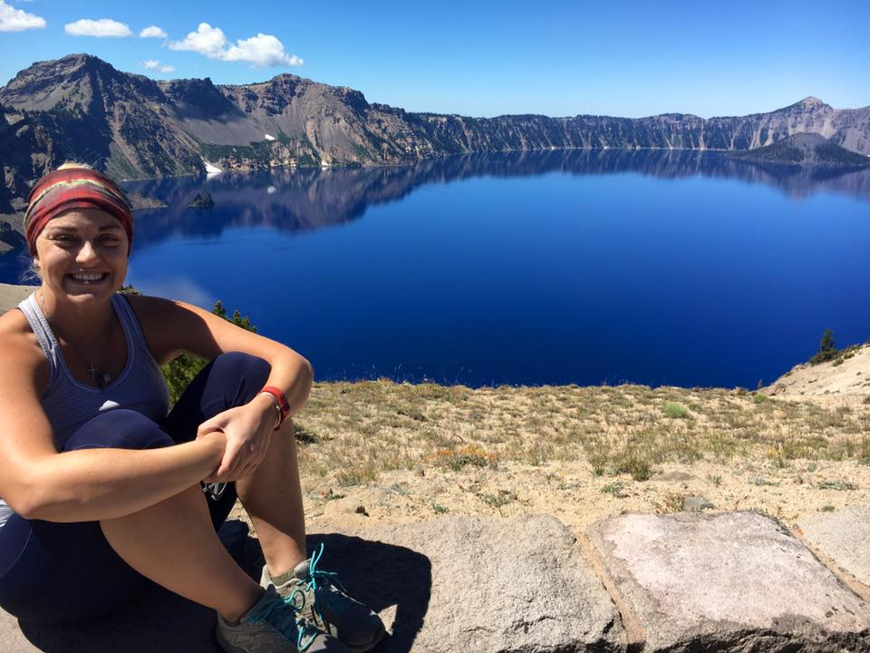
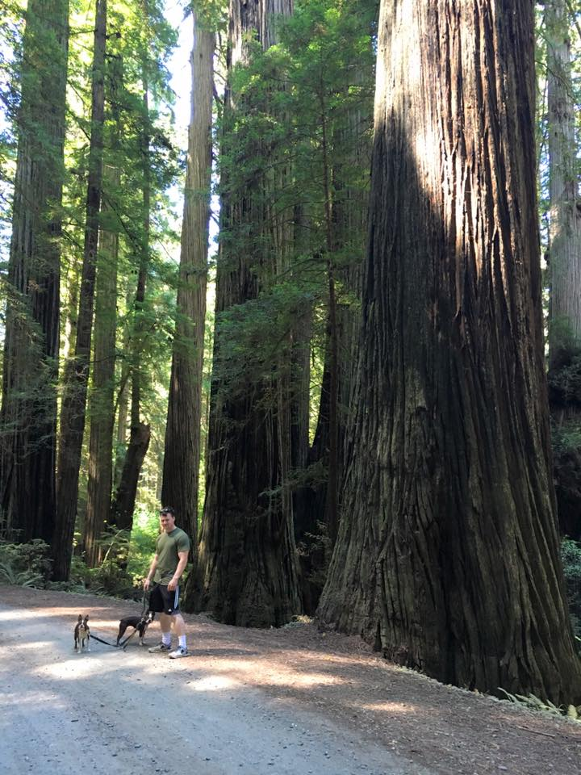
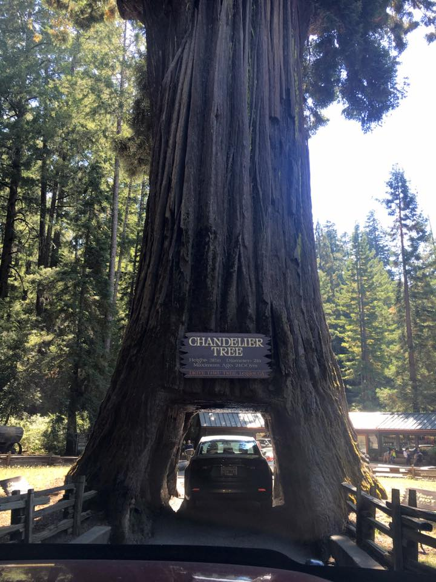
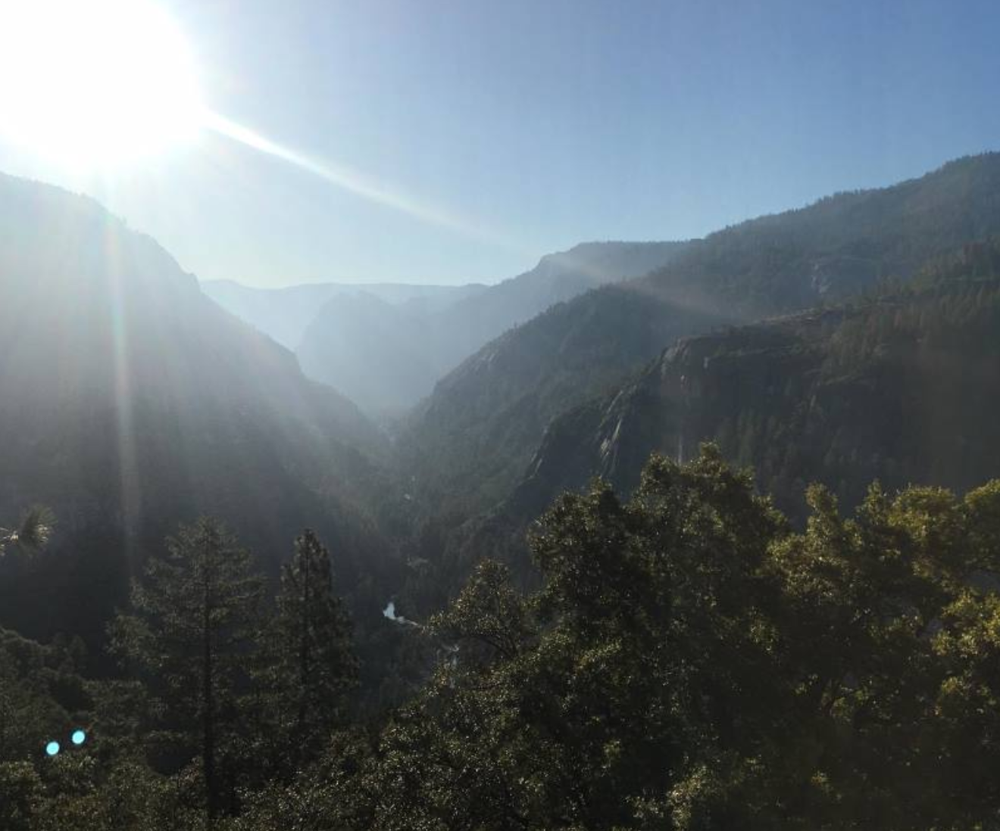
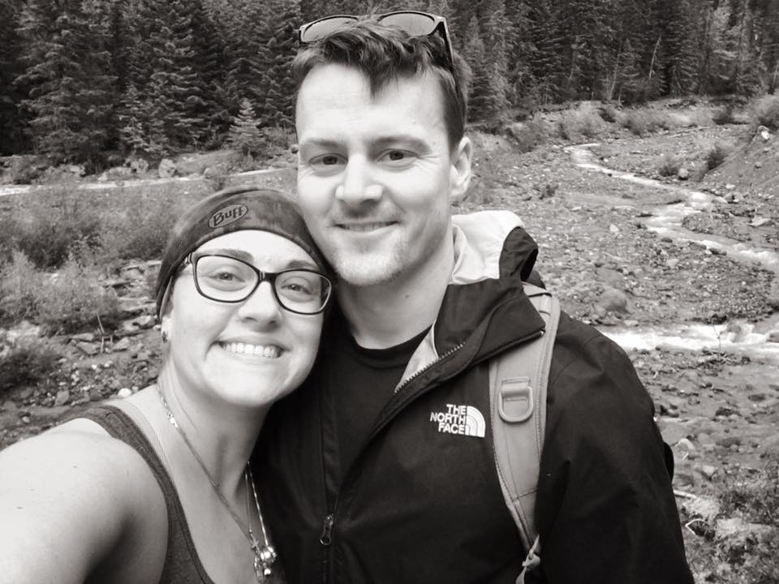

Our trip had been amazing but we were ready to head home. Still, we had some pretty crazy sights left in store. First up was Crater Lake. The water is so blue because it is largely devoid of sediments, giving it a sharp reflection.
As we drove south we went through the Redwoods. The trees were enormous; you could even drive through some.
 Our last major stop was Yosemite with its amazing cliff faces. Definitely one we want to go back to for more hikes.
Overall it was an incredible trip. Glad we had the opportunity and resources. Highly recommend all these places if you're able to go!
